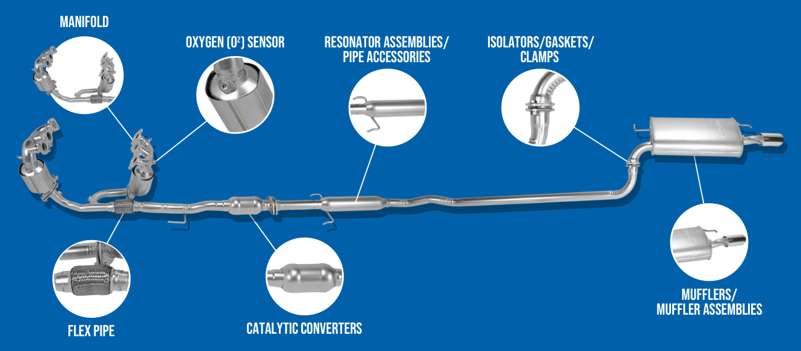
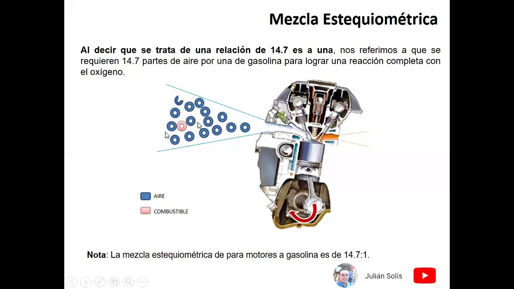

Los vehículos híbridos combinan un motor de combustión interna con uno eléctrico, permitiendo que el motor eléctrico asista o reemplace al motor de gasolina en ciertas condiciones. Esto reduce el consumo de combustible y las emisiones contaminantes.
El sistema de escape híbrido cuenta con catalizadores que transforman gases nocivos como monóxido de carbono (CO), óxidos de nitrógeno (NOx) e hidrocarburos (HC) en gases menos dañinos, como dióxido de carbono (CO2) y vapor de agua.
Las tecnologías avanzadas en autos híbridos premium, como BMW, incluyen sensores de oxígeno de alta precisión, convertidores catalíticos de tres vías, y en algunos casos filtros de partículas, todo diseñado para cumplir con estrictas normas ambientales como Euro 6.Los híbridos usan motor eléctrico + motor de gasolina. Esta combinación reduce emisiones al usar el motor térmico solo cuando se necesita.
El sistema lleva sensores de oxígeno, catalizadores y filtros que convierten gases tóxicos como CO, HC y NOx en compuestos menos dañinos.
BMW y otras marcas premium integran convertidores de alto rendimiento que cumplen normas Euro 6.
La luz "Check Engine" (o "Revisar Motor" en español) en el tablero de tu auto es una advertencia que indica un problema con el motor o el sistema de emisiones. Puede ser algo simple como una tapa de combustible mal cerrada, o algo más grave como un problema en el sistema de combustión. Ignorar esta luz puede llevar a problemas más serios y costosos, así que es importante abordarla.
Esta luz se enciende cuando hay fallas detectadas por el sistema OBD-II. En híbridos puede significar errores tanto en el motor térmico como eléctrico.
La relación estequiométrica en un motor de gasolina es la proporción ideal de aire a combustible que permite una combustión completa del combustible, sin que sobre ni falte oxígeno. En el caso de la gasolina, esta relación es de aproximadamente 14.7:1, es decir, 14.7 gramos de aire por cada gramo de gasolina.
Relación ideal aire/gasolina = 14.7:1. Es decir, 14.7 partes de aire por cada parte de gasolina.
Si hay más gasolina (mezcla rica), se consume más y contamina. Si hay mucho aire (mezcla pobre), el motor falla o daña el catalizador.
La ECU y los sensores mantienen esta relación lo más precisa posible.
Mira este video donde explicamos cómo funciona el sistema de escape:
Ver video en TikTok